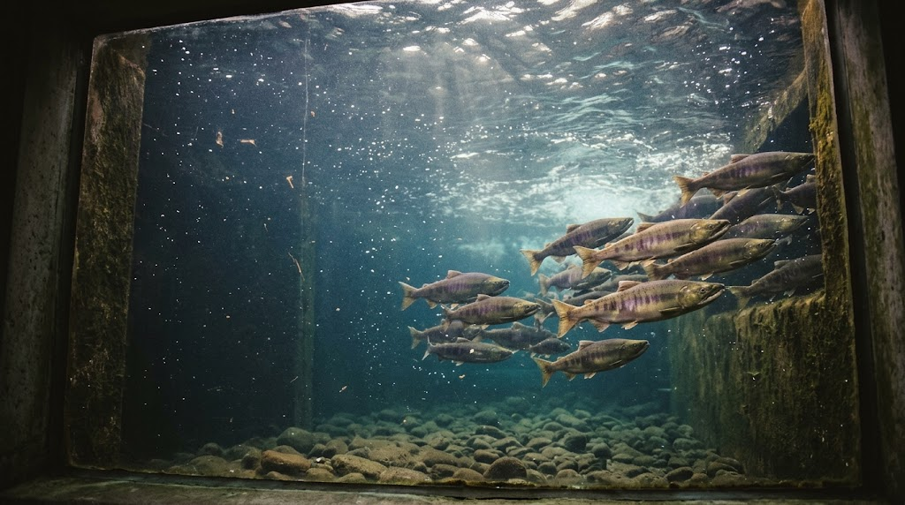
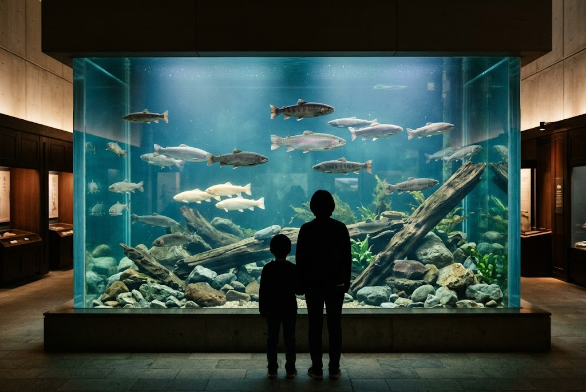
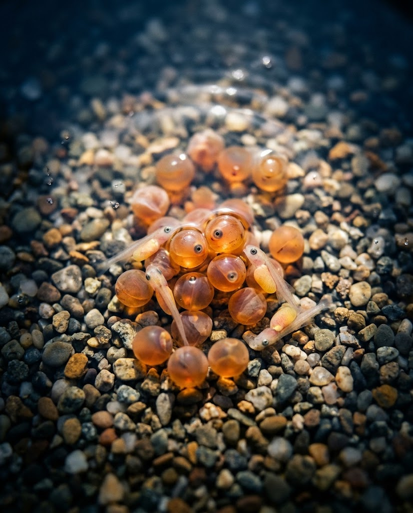

★★★★
平日に利用しました。
入館料は大人650円で、大水槽〜中水槽でサーモン中心の魚を見ることが出来ます。大型のチョウザメもいましたが水が濁っておりほんの一部しか見れませんでした。
イトウに餌やり（100円）などもあり、水族館感覚で楽しむことが出来ます。併設のレストランも利用したかったですが残念ながら貸切となっていました。
Googleマップの口コミより

北海道標津町、サケの町に建つ自然・科学博物館。サケ科魚類の展示数日本一を誇る、標津サーモン科学館です。標津サーモン科学館
海を巡り、生まれた川へ帰るサケ。その暮らしを、日本一の展示数でご覧いただけます。
海や川に生息するさまざまなサケ類を一堂に展示。標津川の産卵シーンを再現した大水槽や、サケの卵・稚魚の飼育体験コーナーが、代表的な見どころです。

大水槽〜中水槽に広がる、サケ科魚類の世界

標津川と直結した魚道水槽では、秋のシロザケやカラフトマスの遡上を、水中の目線で観察できます。
1991年、北海道標津町に開館した自然・科学博物館です。地域のシンボルであるサケと、その生態系について深く学べる施設として設立されました。
標津町は「サケの町」として知られ、サケの水揚げ量は北海道でも有数です。「サケ文化の伝承」「自然保護や資源保護意識の啓発」「地域の教育や観光促進」「町の文化のシンボル」を掲げ、サケの生態や水産業の情報を、市民や観光客の皆さまにお届けしています。
平日に利用しました。
入館料は大人650円で、大水槽〜中水槽でサーモン中心の魚を見ることが出来ます。大型のチョウザメもいましたが水が濁っておりほんの一部しか見れませんでした。
イトウに餌やり（100円）などもあり、水族館感覚で楽しむことが出来ます。併設のレストランも利用したかったですが残念ながら貸切となっていました。
昔、ぬし釣りというゲームが好きでした。渓流や山上湖などの奥深くには、多くのマスがいて、どれも結構立派なサイズで。そんなぬし釣りにいたマス類が勢ぞろいしているのを、生で拝むことができました。
ニジマス、サツキマス、カワマス……アメマス、サクラマス、みな揃ってます。特にニジマスのアルビノ種は初めて見ました。こんなにたくさんアルビノ種のニジマスが揃っているところって、そんなないんじゃないでしょうか？
チョウザメに直接手渡しで餌をあげれたり（手に吸い付かれます）、ドクターフィッシュもちゃんと仕事をしてくれるドクターフィッシュです。湿原の大型魚イトウも山ほどいます。
中標津という、やや観光ルートから外れた場所にある施設ですが、他では得難い川魚体験ができるので、ぜひ近くを通ったら寄ってみていただきたいです。
| 施設名 | 標津サーモン科学館 |
|---|---|
| 住所 | 北海道標津町北1西6丁目1番1-1号 標津サーモンパーク内 |
| 電話番号 | 0153-82-1141 |
| 休館日 | 2月・3月・4月・11月は水曜休館（祝日の場合は翌日休） 12月〜1月は冬期休館 5月〜10月は無休 |
| 公式サイト | https://s-salmon.com/ |
| お問い合わせ | お問い合わせフォーム |